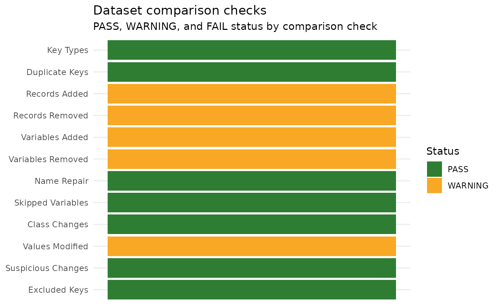
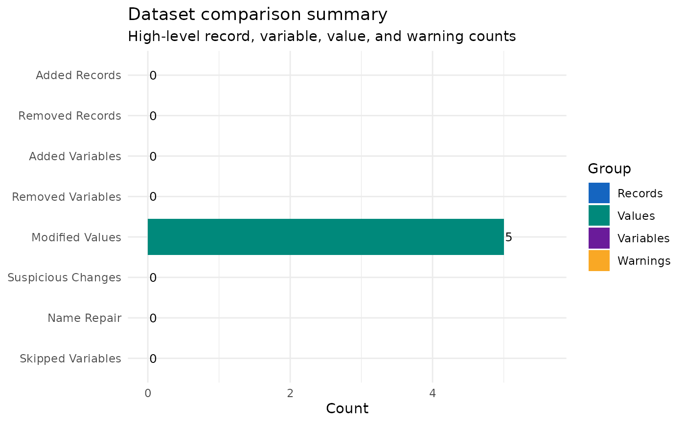
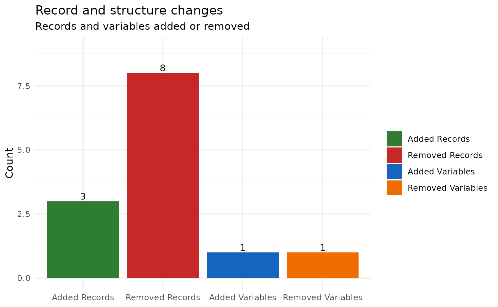
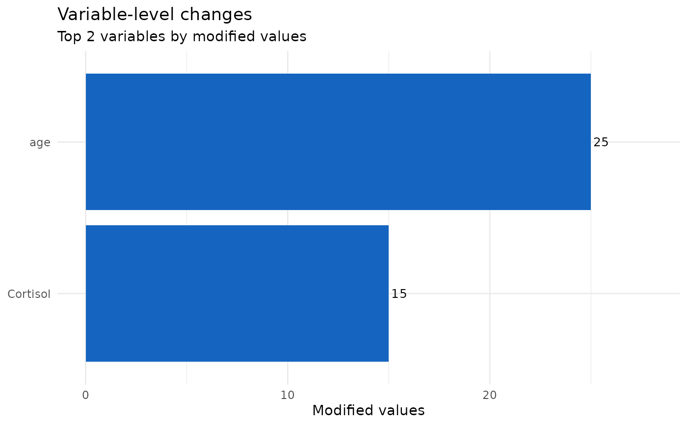
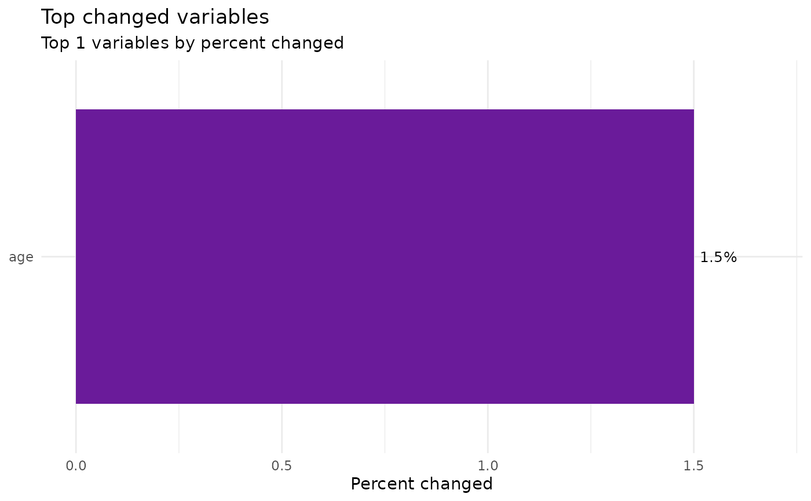

Create diagnostic plots from a CompareDatasets() result object. This
function visualizes dataset-version changes, including check status, summary
metrics, structure changes, and variable-level value changes.
Usage
PlotDatasetComparison(
CompareObj,
Plot = c("All", "Checks", "SummaryMetrics", "StructureChanges", "VariableChanges",
"TopChangedVariables"),
interactive = TRUE,
TopN = 10,
Interactive = lifecycle::deprecated()
)Arguments
- CompareObj
A list returned by
CompareDatasets().- Plot
Character value specifying which plot to return. Options are
"All","Checks","SummaryMetrics","StructureChanges","VariableChanges", and"TopChangedVariables". Default is"All".- interactive
Logical; if
TRUE, plots are converted to interactiveplotlyobjects usingplotly::ggplotly(). Default isTRUE.- TopN
Integer number of variables or records to preview in plots and hover text. Default is
10.- Interactive
Deprecated (since 19.15.0). Use
interactiveinstead.
Value
If Plot = "All", a named list of plots. Otherwise, a single plot
object. Plot objects are either ggplot objects or plotly htmlwidgets,
depending on Interactive.
Details
Use this function after running CompareDatasets() to quickly inspect what
changed between two versions of a dataset.
Examples
data(SampleData)
# Build two versions of a keyed dataset to compare
old_data <- cbind(id = seq_len(nrow(SampleData)), SampleData)
new_data <- old_data
new_data$age[1:5] <- new_data$age[1:5] + 1
comparison <- CompareDatasets(old_data, new_data, keys = "id")
diagnostics <- PlotDatasetComparison(
comparison,
Plot = "All",
interactive = FALSE
)
# Check status, summary metrics, structural, value-change, and top-change views
diagnostics$Checks

diagnostics$SummaryMetrics

diagnostics$StructureChanges

diagnostics$VariableChanges

diagnostics$TopChangedVariables
